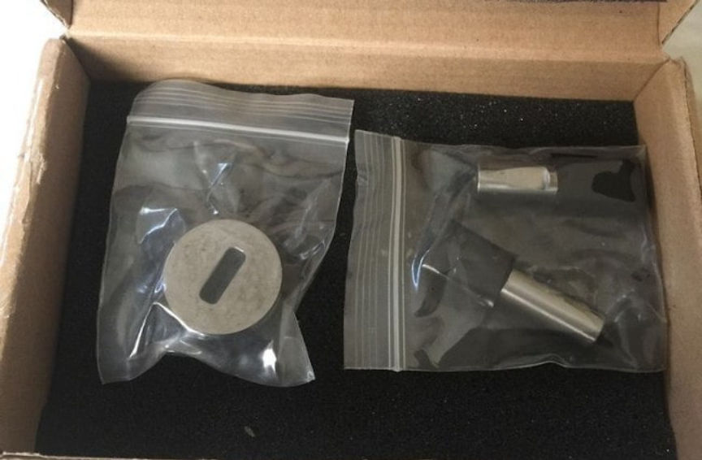
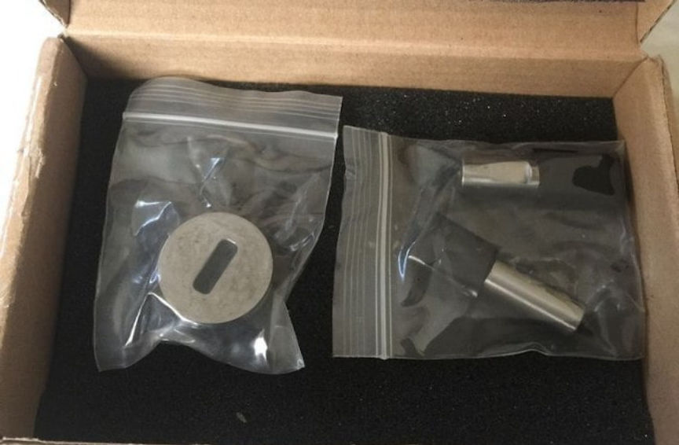

Court Denies Pre-Trial Release for XanaxKing
~4 min read | Published on 2020-05-29, tagged Arrested, Darkweb-Vendor, Drug-Bust, Drugs using 899 words.
A California court denied a motion for pre-trial release filed by Jeremy Donagal, the drug dealer convicted of operating the “Xanax King” vendor accounts. He is now facing new charges for selling through a new vendor account on the darkweb.
In 2015, Donagal received a 70 month prison sentence for the drug crimes committed under the Xanax King moniker. Those crimes included manufacturing counterfeit Xanax pills, distributing counterfeit Xanax pills, and others.
“At its height, (Donagal’s) operation manufactured and distributed well over 1,000,000 alprazolam tablets in a single week, and Defendant sold these tablets for between $.50 and $1.00 per pill, depending on the quantity of the order,” an Assistant U.S. Attorney wrote in a sentencing memo.
Donagal left prison sooner than planned in 2018. His sentence required three years of supervised release. At the time of his most recent arrest, Donagal was still under supervision.
On May 14, the Drug Enforcement Administration raided a warehouse in Concord, California, that Donagal had rented. Donagal rented the facility under the name of his company, Extreme Lifestyles LLC. Inside, agents found “multiple pill presses and thousands (possibly tens of thousands)” of counterfeit Xanax pills marked with the “GG249” imprint. They also discovered “packaging and shipping materials in the name of Donagal’s dark web persona.”"
In January 2018, Donagals wife set up Extreme Lifestyles LLC (while Donagal was still in prison) In June 2018, Donagal left prison as an (almost) free man. In September 2018, Donagal became the “manager” of the company renting the warehouse. In September 2018, Donagal began wiring money to a recipient in China In September 2018, Donagal rented the warehouse. In February 2019, Donagal ordered equipment used to manufacture pills, including a pill press and dies. In February 2019 Agents posing as delivery drivers delivered the equipment to Donagal’s Concord warehouse. In April 2019, DEA agents observed Donagal and a co-conspirator in the warehouse. In May 2019, the DEA raided the warehouse and arrested the suspect.

United States Attorney David L. Anderson summarized Donagal’s recent arrest in one paragraph in the motion to revoke supervised release:
[A]lmost immediately after being released from prison to supervised release, Donagal began work setting up a new counterfeit drug operation. He set up a laboratory and pill press operation to manufacture the counterfeit pills, and he established a dark web vendor site to sell the pills nationwide. He also established vendor pages on dark web criminal marketplaces like Samsara and Empire. On May 14, 2020, agents executed search warrants at Donagal’s residence and warehouse and seized pill presses, punch-dies designed to produce counterfeit drugs, and that packaging materials in the same brand name he used on the dark web marketplaces. That same day, agents arrested him.
[img=]The vendor in question will likely be an inactive vendor on Empire.[/img]
Law enforcement knew the usernames of the profiles Donagal had created after his release from prison. The court documents do not disclose the usernames Donagal allegedly used for his most recent drug trafficking operation. “The government is not using that name here because the investigation of Donagal’s darkweb activities is ongoing,” it said in one document. But there is still enough information to identify the vendor.
U.S. Attorney Anderson added some information about the DEA’s role in the investigation and arrest:
An undercover agent (“UC”) purchased tablets from Donagal’s dark web persona on multiple occasions, including counterfeit “GG249” tablets. The tablets were white, rectangular bars with the imprint “GG” and “2 4 9” separated by “|” scores. They were identical or nearly identical to the generic alprazolam tablets the FDA authorized Sandoz Inc. to manufacture and distribute. The agent paid for the tablets with the cryptocurrency Bitcoin. On one occasion, agents followed Donagal as he left his warehouse with a bin full of postal boxes and then drove around to at least two different blue U.S. Postal Service collection bins and deposited the boxes. The agents subsequently viewed the boxes; one of them was addressed to the UC and contained the same type and approximately the same number of tablets the UC had ordered from Donagal’s online persona.
The government’s response to Donagal’s motion for pre-trial release contained additional information about the vendor profile.
For example, during the raid at the warehouse, the DEA found typical drug production and trafficking supplies as well as materials used for shipping and concealing products. They discovered “boxes of empty vitamin bottles and rolls of labels for those bottles.” The labels were used to give the false impression that the bottles were new. The vendor’s customers can likely identify the vendor in question with that detail alone. In one section of the government’s reply, a U.S. Attorney wrote, “Donagal had established vendor pages in multiple criminal marketplaces, and claimed to have made over 2,000 sales as of August, 2019.”
An anonymous reader emailed darknetlive the tip about Donagal as well as a list of the details needed to identify the vendor:
Sold Sandoz GG249 Sold non-scheduled benzodiazepines Started vending sometime after July 2018 Sold on on Samsara and Empire Had a private store Disappeared in the last couple weeks Shipped from California Shipped pills in fake vitamin bottles
After the DEA’s raid at the warehouse, the court issued an arrest warrant for Donagal for one count of possessing punches and dies designed to produce counterfeit drugs and one count of making counterfeit drugs.
On May 20, a federal judge denied Donagal’s motion for pre-trial release and remanded the defendant to custody at Santa Rita Jail.
Motion To Revoke Supervised Release pdf html
Government’s Opposition To Defendant’s Motion For Release pdf html
In 2015, Donagal received a 70 month prison sentence for the drug crimes committed under the Xanax King moniker. Those crimes included manufacturing counterfeit Xanax pills, distributing counterfeit Xanax pills, and others.
“At its height, (Donagal’s) operation manufactured and distributed well over 1,000,000 alprazolam tablets in a single week, and Defendant sold these tablets for between $.50 and $1.00 per pill, depending on the quantity of the order,” an Assistant U.S. Attorney wrote in a sentencing memo.
Donagal left prison sooner than planned in 2018. His sentence required three years of supervised release. At the time of his most recent arrest, Donagal was still under supervision.
On May 14, the Drug Enforcement Administration raided a warehouse in Concord, California, that Donagal had rented. Donagal rented the facility under the name of his company, Extreme Lifestyles LLC. Inside, agents found “multiple pill presses and thousands (possibly tens of thousands)” of counterfeit Xanax pills marked with the “GG249” imprint. They also discovered “packaging and shipping materials in the name of Donagal’s dark web persona.”"

GG249 punch/dies
United States Attorney David L. Anderson summarized Donagal’s recent arrest in one paragraph in the motion to revoke supervised release:
[A]lmost immediately after being released from prison to supervised release, Donagal began work setting up a new counterfeit drug operation. He set up a laboratory and pill press operation to manufacture the counterfeit pills, and he established a dark web vendor site to sell the pills nationwide. He also established vendor pages on dark web criminal marketplaces like Samsara and Empire. On May 14, 2020, agents executed search warrants at Donagal’s residence and warehouse and seized pill presses, punch-dies designed to produce counterfeit drugs, and that packaging materials in the same brand name he used on the dark web marketplaces. That same day, agents arrested him.
[img=]The vendor in question will likely be an inactive vendor on Empire.[/img]
Law enforcement knew the usernames of the profiles Donagal had created after his release from prison. The court documents do not disclose the usernames Donagal allegedly used for his most recent drug trafficking operation. “The government is not using that name here because the investigation of Donagal’s darkweb activities is ongoing,” it said in one document. But there is still enough information to identify the vendor.
U.S. Attorney Anderson added some information about the DEA’s role in the investigation and arrest:
An undercover agent (“UC”) purchased tablets from Donagal’s dark web persona on multiple occasions, including counterfeit “GG249” tablets. The tablets were white, rectangular bars with the imprint “GG” and “2 4 9” separated by “|” scores. They were identical or nearly identical to the generic alprazolam tablets the FDA authorized Sandoz Inc. to manufacture and distribute. The agent paid for the tablets with the cryptocurrency Bitcoin. On one occasion, agents followed Donagal as he left his warehouse with a bin full of postal boxes and then drove around to at least two different blue U.S. Postal Service collection bins and deposited the boxes. The agents subsequently viewed the boxes; one of them was addressed to the UC and contained the same type and approximately the same number of tablets the UC had ordered from Donagal’s online persona.
The government’s response to Donagal’s motion for pre-trial release contained additional information about the vendor profile.
For example, during the raid at the warehouse, the DEA found typical drug production and trafficking supplies as well as materials used for shipping and concealing products. They discovered “boxes of empty vitamin bottles and rolls of labels for those bottles.” The labels were used to give the false impression that the bottles were new. The vendor’s customers can likely identify the vendor in question with that detail alone. In one section of the government’s reply, a U.S. Attorney wrote, “Donagal had established vendor pages in multiple criminal marketplaces, and claimed to have made over 2,000 sales as of August, 2019.”
An anonymous reader emailed darknetlive the tip about Donagal as well as a list of the details needed to identify the vendor:
After the DEA’s raid at the warehouse, the court issued an arrest warrant for Donagal for one count of possessing punches and dies designed to produce counterfeit drugs and one count of making counterfeit drugs.
On May 20, a federal judge denied Donagal’s motion for pre-trial release and remanded the defendant to custody at Santa Rita Jail.
Motion To Revoke Supervised Release pdf html
Government’s Opposition To Defendant’s Motion For Release pdf html